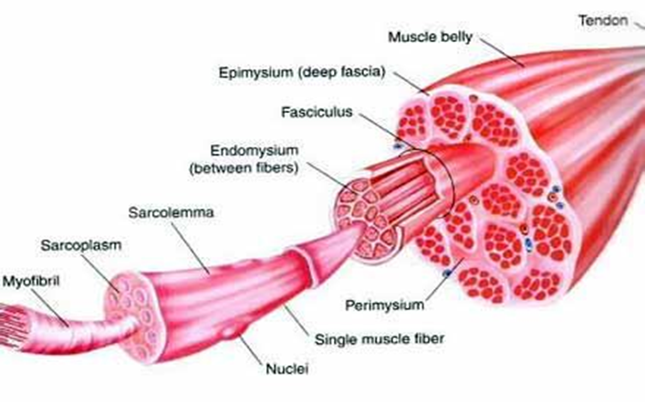
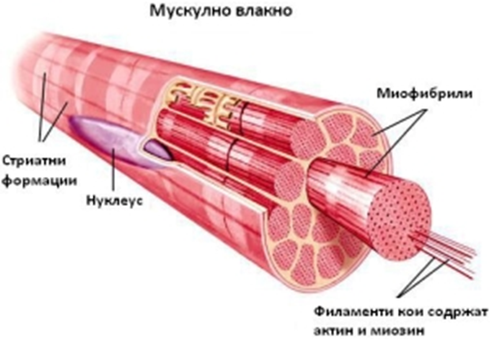

Myologia е наука која го изучува мускулниот систем. Мускулниот систем претставува активен дел од локомоторниот апарат во човековото тело.
Постојат три вида на мускули:
Скелетните мускули се поврзуваат за коските. Мускулните влакна им се издолжени со цилиндрична форма и тапи завршетоци. Повеќе мускулни влакна градат поврзани со сврзно ткиво оформуваат мускулно снопче, а збир на мускулни снопчина формираат мускул.
Мазните мускули ги оформуваат ѕидовите на внатрешните органи, крвните садови и жолчните канали. Мускулните влакна имаат вретеновидна форма со заострени завршетоци. Нивната функција е под влијание на автономниот нервен систем.
Срцевиот мускул (миокард), анатомски наликува на напречно-пругаст, а физиолошки на мазен мускул, па затоа се одделил како посебен мускул. Односно мускулните влакна се издолжени со цилиндрична форма и сооединети формираат мрежа или синцициум. Тој е инервиран од автономниот нервен систем.
Скелетнитемускули се делат на:
Тие се делат на мимични и џвакални.
Мимичните мускули се наоѓаат во поткожното ткиво на лицето, покривот од черепот и предната страна од вратот. Такви се кружниот мускул на устата, образниот мускул, очниот мускул и др. Сите овие мускули му даваат специфична форма на лицето во зависност од психичката состојба.
Џвакалните мускули служат за движење на вилицата, односно за џвакање на храната. Такви мускули се:
Поделени се на четири групи и тоа:
Мускули на вратот. Се делат на предни и задни. Предните можат да бидат во површински и длабок слој. Во површинскиот слој се наоѓаат: платизма, натхиоидни, подхиоидни и бочен флексор на главата. Нивна улога е да ги спуштаат и креваат мандубулата и подјазичната коска при голтање и зборување и да ja флексираат главата. Задните мускули се девет распоредени во четири длабински слоеви.
Мускули на граден кош. Тие се распоредени во површински и длабок слој. Површинскиот слој го сочинуваат четири мускули т.е голем граден мускул, мал граден мускул, подклучен мускул и преден запчест мускул. Нивната улога е да ги подигнаат ребрата и да ја спуштаат клавикулата. Длабокиот слој го сочинуваат: меѓуребрените мускули, напречниот граден мускул и дијафрагмата. Овие мускули имаат улога на издишувачи.
Мускули на стомакот. Стомачните ѕидови се изградени од еден преден и три бочни плочести мускули. Нивна функција е да вршат флексија на градниот кош кон карлицата и да учествуваат во абдоминалната преса. Исто така овие мускули со својот тонус ги држат органите во стомачната празнина.
Мускули на грбот. Тие се поделени во две групи и тоа: површинска и длабока група. Површинската група е составена од: трапезест мускул, најширок гребен мускул, мускул поткренувач на лопатката, ромбоиден мускул, горно заден запчест и долно заден запчест мускул. При контракција на овие мускули се врши: екстензија на главата, подигање на рамената, вртење на раката навнатре, подигнување на лопатката и подигање и спуштање на ребрата. Длабоката група е составена од повеќе мускули кои одржуваат рамнотежа.
Се делат на:
Мускули на рамото. Најзначајни мускули меѓу нив се: делтоидниот мускул, надгребниот мускул, подгребниот мускул и подлопатичниот мускул. Нивната улога е да ја подигаат и вртат раката.
Мускули на надлактот. Поделени се на предна и задна група. Предната група се состои од двоглав мускул на надлактот и надлакотен мускул чија улога е да го флексираат подлактот. Триглавиот мускул на надлактот е единствениот во задната група и по функција претставува екстензор на подлактот кон надлактот.
Мускули на подлактот. Се делат на три групи и тоа предна, латерална и задна. Предната и задната група се состојат од осум мускули, латералната од четири. По функција тие се флексори и екстензори на шаката и прстите.
Мускули на шаката. Мускули на шаката се деветнаесет на број и нивна функција е да ги движат прстите.
Мукули на бедрото – се делат на внатрешни и надворешни. Внатрешната група е составена само од слабинскобедрениот мускул кој е главен флексор на бутот. Надводорешната група ја сочинуваат голем седален, среден седален и најмал седален мускул и тие се екстензори и надворешни ротатори на бутот.
Мускули на бутот – се делат на внатрешна, предна и задна група. Внатрешната група ја сочинуваат мускули кои ја приближуваат ногата до телото. Предната група е составена од мускули кои вршат ротација на бутот. Задната група ја сочинуваат мускули кои претставуваат флексори на потколеницата и екстензори на бутот.
Мускули на подколеница – се поделени во предна, латерална и задна група. Предната е составена од четири мускули по функција флексори и супинатори на стапалото. Латералната е составена од три листни мускули кои вршат флексија и ротација на стапалото. Задната ја сочинуваат пет мускули од кои најразвиен е триглавиот мускул на стапалото и по функција е најснажен плантарен флексор на стапалото.
Мускули на стапалото – вкупно се 20 поделени на дорзални и плантарни.